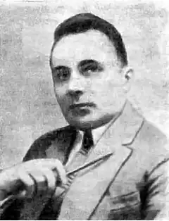

МАМОНТОВ Яків Андрійович (псевдоніми: Я. Лірницький, Я. Пан)
Український драматург і театрознавець
Народився 4 листопада 1886р. в с. Стрілиця (нині с. Шапошникове Сумської області) в селянській родині. Навчався в Дергачівському сільськогосподарському училищі. Після училища певний час працював агрономом на Курщині. 1914 р. закінчив Московський комерційний інститут, захистив кандидатську дисертацію "Проблема естетичного виховання" на здобуття вченого ступеня кандидата наук. 1914—1917 рр. був на фронті. З 1921 р. викладав педагогіку, естетику і психологію в Харківському інституті народної освіти. Організував при інституті театральну студію, писав для неї п’єси, робив інсценівки. Перше оповідання Я. Мамонтова "Під чорними хмарами" вийшло друком у журналі "Рідний край", редагованому Оленою Пчілкою. В 1907 р. було написано п’єсу "Дівчина з арфою". Автор ЇЇ зазнав критики за символізм, за "винниченківщину", проте продовжував писати в такому самому дусі (п’єси "Над безоднею", 1919—1920; "Коли народ визволяється", 1924). Сповнена символів драма "Ave Maria" (1924), в якій ідеться вже про атомну енергію та інші таємниці природи. Того ж року Я. Мамонтов видав збірку віршів "Вінки за водою". Критики звинувачували автора п’єс "Веселий Хам" (1921), "До третіх півнів" (1925) та "Республіка на колесах" (1928) у надмірному психологізмі, наслідуванні Г. Ібсена. Хоча він і розробляв актуальні теми, йому закидали аполітизм, декаденство, відрив від життя. Схвально була зустрінута глядачами трагікомедія "Рожеве павутиння" (1928), спрямована проти міщанства. Після п’єс "Княжна Вікторія" (1929), "Його власність" (1930), "Золотий обруч" (1930, за повістю І. Франка "Захар Беркут") творча активність Я. Мамонтова знижується. Ще в 1936 p., напередодні масових репресій проти української культури, з’являється п’єса "Своя людина", а в 1939 р. — інсценізація повісті М. Коцюбинського "Fata morgana". Я. Мамонтов залишив помітний слід у науці. Окремими виданнями вийшли книжки "Проблемы эстетического воспитания" (1914), "Сучасні проблеми педагогічної творчості" (1922), "На театральних роздоріжжях" (1925). Помер 31 січня 1940 р.